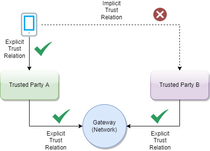
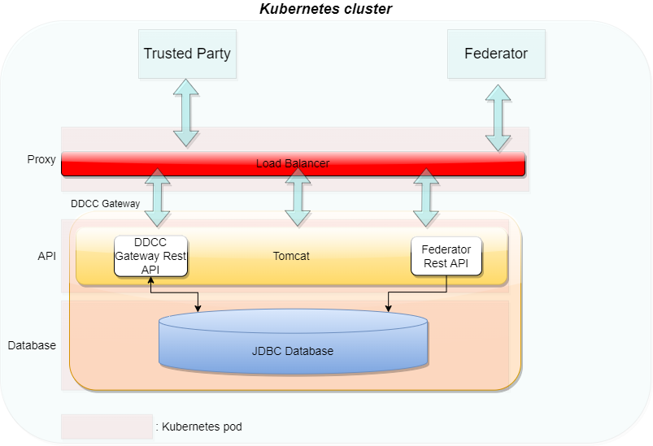

Traduction automatique — non relue par une personne
Cette page a été traduite automatiquement. Aucune personne n’a relu ni validé cette traduction, qui peut contenir des erreurs. Seule la page dans la langue source fait foi. Lire l’original (anglais)
Machine translation — not reviewed by a person. Read the original (English)
Terminologie
Ces concepts et le tableau suivant contiennent les abréviations et la terminologie utilisées tout au long de ce document.
| Terme | Description |
|---|---|
| DCC | Certificat COVID numérique (Digital COVID-19 Certificate). |
| DDCC | Documentation numérique des certificats COVID-19 (Digital Documentation COVID-19 Certificate). |
| Passerelle DCC | Application web REST pour l’échange de certificats de signataire de documents, de jeux de valeurs DCC, de règles métier DCC et de listes de révocation à des fins de vérification des DCC entre les systèmes dorsaux nationaux des États connectés. |
| CMS | Cryptographic Message Syntax. Conformément à la RFC5652. Cette syntaxe est utilisée pour signer numériquement, condenser, authentifier ou chiffrer un contenu de message arbitraire. |
| JRC | Centre commun de recherche européen (European Joint Research Centre). |
| OG | Passerelle d’origine (Origin Gateway). |
| CQL | Clinical Quality Language. |
Introduction
Cette spécification architecturale fournit les moyens d’établir un réseau de confiance fédéré destiné à être utilisé avec des dossiers de santé tels que les spécifications techniques et documents d’orientation pour la mise en œuvre de l’OMS relatifs à la documentation numérique des certificats COVID-19 (DDCC). Elle repose sur l’hypothèse que les participants au réseau de confiance peuvent établir leurs propres réseaux de confiance nationaux indépendants, participer à un réseau de confiance régional ou souhaiter participer à un réseau de confiance fédéré mondial. En outre, les participants au réseau de confiance peuvent souhaiter que ces réseaux de confiance soient interopérables pour des cas d’utilisation nationaux et transjuridictionnels. Bien que les considérations spécifiques de gouvernance et de politique requises pour l’établissement de tels réseaux de confiance interopérables ne relèvent pas du périmètre de ce document, l’intention est que la conception technique décrite dans ce document prenne en charge les politiques intrajuridictionnelles et transjuridictionnelles des participants au réseau de confiance.
Les spécifications de la passerelle du réseau de confiance (TNG) contenues dans ce document sont conçues pour prendre en charge la spécification DDCC, qui fait office de spécification passerelle/cadre pour divers dossiers de santé tels que les certificats COVID numériques (p. ex. le DCC de l’UE, les SMART Health Cards, DIVOC et l’OACI). Cette spécification s’appuie sur la passerelle EU Digital Covid Certificate en l’étendant de plusieurs manières importantes :
- permettant la fédération et l’échange pair à pair d’informations entre passerelles ;
- prenant en charge l’accès au contenu de métadonnées (p. ex. jeux de valeurs/codages, règles métier) dans le respect explicite de la spécification HL7 FHIR ;
- fournissant un moyen explicite de révocation des certificats COVID numériques ; et
- permettant la prise en charge (facultative) des processus de vérification et de validation en ligne.
Dans le système DCC actuel, la passerelle centralisée joue le rôle clé d’établissement de la confiance entre tous les participants au réseau de confiance connectés. Les opérateurs de la passerelle suivent un processus bien documenté pour établir l’identité de chaque participant au réseau de confiance et intégrer son ancre de confiance. La TNG s’appuie sur ce système pour permettre la création de passerelles de confiance par d’autres organisations, ce qui permet de former un réseau fédéré de passerelles de confiance prenant en charge tous les principaux certificats de justificatifs COVID-19.
Partie de confiance et système dorsal national
La conception actuelle de la passerelle est axée sur l’établissement de la confiance entre des « systèmes dorsaux nationaux », au sens d’un système exploité/détenu par une autorité sanitaire nationale. Il peut s’agir d’un script, d’une solution entièrement automatisée ou d’un processus manuel, capable de se connecter à la passerelle de manière fiable et d’effectuer des téléversements et des téléchargements de contenu. Les solutions concrètes qui se trouvent derrière ne relèvent pas du périmètre de la passerelle elle-même. Dans le périmètre DDCC, le terme « système dorsal national » est trop restrictif, car d’autres parties peuvent être connectées avec leur système de publication à une passerelle du réseau de confiance. Par conséquent, dans ce périmètre, le terme « système dorsal national » devrait plutôt être compris comme « partie de confiance », au sens d’un participant qui a obtenu l’accès à une passerelle de confiance. La passerelle de confiance ou le fédérateur agit alors également comme « partie de confiance » vis-à-vis des autres passerelles.
Vision de conception de la passerelle
Actuellement, la passerelle EU DCC est un système centralisé unique qui établit la confiance entre les participants DCC et permet le partage des règles métier, des jeux de valeurs et des listes de révocation. Si une autre région du monde établit une telle passerelle, il n’existe actuellement aucune méthode dans l’architecture pour échanger ces données de confiance entre les deux passerelles. Dans cette nouvelle architecture, dans le contexte DDCC, plusieurs passerelles peuvent être connectées entre elles et partager des données de confiance. À long terme, cette architecture permettra la création de groupes et, en définitive, l’établissement d’une fédération. Une telle architecture peut être applicable et présenter un intérêt pour des parties non institutionnelles, p. ex. des compagnies aériennes, qui souhaitent disposer d’une copie en lecture seule du contenu de la passerelle. Cela peut être réalisé en intégrant la compagnie aérienne dans une passerelle spécialement mise en place à cet effet et connectée à la passerelle officielle. Pour atteindre cet objectif, l’architecture doit prendre en charge plusieurs modes de fonctionnement, p. ex. primaire-secondaire. L’implémentation actuelle de l’EU DCCG est, comme mentionné précédemment, un système centralisé unique qui sert de plateforme centrale pour stocker et gérer les informations nécessaires recueillies auprès des parties de confiance.

La TNG devrait réaliser cette amélioration de l’implémentation actuelle de la DCCG dans le but de créer un réseau entre plusieurs passerelles pour l’échange de matériel de clés publiques associé aux dossiers de santé, de jeux de valeurs et de règles métier entre différentes parties (institutionnelles, non institutionnelles, commerciales). Dans cette architecture, une passerelle peut se connecter à n’importe quelle autre passerelle en configurant manuellement la liste des connexions et des relations de confiance. Pour gérer les connexions et leur comportement de téléchargement, un nouveau composant, le fédérateur, est introduit. Le fédérateur est un microservice qui agit comme un client de téléchargement automatisé entre deux passerelles et assume toutes les responsabilités de l’échange de données de confiance.

L’épine dorsale de cet échange de données est la fonctionnalité de l’actuelle bibliothèque de connecteur, qui se connecte à la passerelle et fournit au consommateur les fonctionnalités les plus nécessaires. Cette bibliothèque est enrichie de la capacité de se connecter à plusieurs passerelles au lieu d’une seule.
Cas d’utilisation
Intégration bilatérale
Dans le cas d’utilisation de l’intégration bilatérale, la bibliothèque de connecteur se connecte en tant que partie de confiance à plusieurs passerelles pour télécharger/téléverser du contenu. Cela nécessite une intégration sur les deux passerelles.

Échange pair à pair
Dans le cas d’utilisation de l’échange pair à pair, deux passerelles ou plus peuvent échanger leurs données de manière bidirectionnelle. La passerelle source et la passerelle cible se permettent mutuellement de télécharger les données. Toutes les données échangées sont ajoutées aux données existantes de la passerelle. Cela peut inclure les données de passerelles tierces, si l’accord d’échange de données entre les deux passerelles le permet.

Échange primaire-secondaire
Dans le cas d’utilisation de l’échange primaire-secondaire, une ou plusieurs passerelles jouent le rôle de source primaire, et un autre ensemble de passerelles celui de source secondaire. Dans ce mode, les secondaires téléchargent les données du primaire et les ajoutent à leur propre ensemble de données ou remplacent leur ensemble de données par les données téléchargées. Le primaire ignore les données des secondaires, qui agissent simplement comme des copies en lecture de la passerelle primaire. Les systèmes dorsaux nationaux principaux peuvent se connecter à la passerelle primaire et téléverser les données vers cette passerelle primaire unique.

Échange de sources combinées
Dans le cas d’utilisation de l’échange de sources combinées, la passerelle télécharge les données de plusieurs passerelles et les ajoute à son propre ensemble de données. Il en résulte une collection combinée.

Médiateur de confiance
Le contenu de la passerelle peut être utilisé pour établir la confiance entre des participants qui ne sont que faiblement couplés, par exemple des dispositifs de vérification connus de la partie de confiance A, mais pas directement connus de la partie de confiance B.

Pour établir la confiance entre les participants, un médiateur de confiance peut être généré, qui s’appuie sur la liste de confiance de la passerelle. Le médiateur peut ensuite utiliser ces informations pour décider si la relation de confiance devrait être établie ou non. Par exemple, l’intercepteur peut vérifier si la signature d’un JWT a été créée par la clé publique d’un certificat signé par une SCA intégrée. Lorsque la SCA est intégrée et de confiance, cela prouve que la signature a été réalisée par une entité qui bénéficie de la confiance de cette SCA. La confiance envers ce participant est alors également établie.

Vue d’ensemble de l’architecture
La passerelle du réseau de confiance a pour objet de permettre l’échange sécurisé et de confiance de données au sein d’un réseau de confiance.
Données échangées par la TNG
Échange de métadonnées
La TNG fournit un moyen interopérable d’échanger des métadonnées clés à l’appui des certificats COVID-19 numériques au moyen des normes HL7 FHIR. Cela comprend notamment :
- Jeux de valeurs, qui devraient être partagés au moyen des transactions définies dans le profil IHE Sharing Value Sets and Concept Maps (SVCM) et comprendre les ressources suivantes :
- Ressources HL7 FHIR ValueSet pour partager les codages et terminologies référencés par les diverses spécifications de certificats COVID numériques (p. ex. vaccins ou tests autorisés). - Des ressources HL7 FHIR ConceptMap peuvent être utilisées pour fournir des correspondances entre les codages définis par les juridictions et les codages de la spécification DDCC.
- Règles métier, qui devraient suivre l’artefact de connaissance et l’infrastructure d’aide à la décision clinique, comprenant les ressources suivantes :
- Ressources HL7 FHIR Library pour partager des bibliothèques de règles métier exprimées en Clinical Quality Language (CQL)
- Ressources HL7 FHIR PlanDefinition pour indiquer quelle règle métier devrait être exécutée en fonction des cas d’utilisation pertinents de validation ou de continuité des soins.
Pour abstraire ces exigences, la passerelle du réseau de confiance introduira une nouvelle fonctionnalité appelée « références de confiance » (Trusted References), qui permet à la passerelle de partager tout type de point de terminaison de service sans partager le contenu lui-même. Pour des raisons de rétrocompatibilité, les fonctionnalités des règles métier et des jeux de valeurs DCC restent dans l’architecture, mais peuvent être désactivées par configuration au moyen de profils. Les points de terminaison explicites pour les règles métier et les jeux de valeurs seront remplacés par les références de confiance, car la grande diversité des contenus médicaux devrait être laissée aux implémentations de serveurs FHIR plutôt qu’à l’implémentation de chaque service dans la passerelle elle-même.
Échange de clés publiques
La TNG fournit un moyen de partager les clés publiques utilisées pour signer les certificats COVID numériques, ainsi que de fournir des listes de certificats de clés publiques révoqués.
Échange des références
La TNG offre la fonctionnalité de stockage de ressources sûres et dignes de confiance (c’est-à-dire des jeux de valeurs FHIR ou des règles métier), ce qui garantit que tous les participants du système ont une connaissance précise des sources importantes. Ces références peuvent être stockées sous forme d’URL.
Échange des émetteurs
Pour certains types de justificatifs, comme les Verifiable Credentials, la TNG est nécessaire pour garantir la confiance envers les émetteurs de ces justificatifs. La plupart des justificatifs comportent un identifiant d’émetteur, tel qu’une URL HTTP ou un DID, avec le matériel de clé publique permettant de vérifier ces justificatifs. Pour fournir une liste de confiance de ces émetteurs, la passerelle offre une fonctionnalité de téléversement des identifiants d’émetteur.
Concept de la solution
Pour concrétiser la vision architecturale, la passerelle DCC existante sera enrichie d’un microservice qui implémente le composant fédérateur de la TNG. Ce composant fédérateur est déployé à côté de la passerelle et gère la communication avec les autres fédérateurs. Chaque fédérateur est capable de télécharger les données d’autres composants. Le téléversement de données vers d’autres fédérateurs n’est pas prévu (chaque passerelle télécharge au moyen d’un fédérateur). Les consommateurs de confiance peuvent décider d’utiliser les informations de fédération et doivent activer explicitement cette fonctionnalité. En résumé, le fédérateur agit comme connecteur/synchroniseur de passerelle et comme fournisseur d’interface pour l’accès aux données fédérées.

Remarque : l’architecture centrale de la passerelle DCC reste inchangée. Seules des améliorations rétrocompatibles seront introduites pour prendre en charge la fédération.
Établissement de la connexion à la passerelle
La spécification DDCC fournit des normes interopérables pour l’échange de contenu de métadonnées, tel que les références de confiance, les certificats de confiance et les certificats de signataire, avec des systèmes au moyen d’une passerelle du réseau de confiance. Ces métadonnées sont gérées par des systèmes de confiance qui auront besoin d’un service de connexion/proxy ou de façade avec la passerelle du réseau de confiance (« médiateur TNG »). Ce médiateur doit être intégré et approuvé par l’opérateur de la TNG avant que le téléversement ou le téléchargement de contenu soit possible. Techniquement, il peut s’agir d’un script, d’un système dorsal ou d’un médiateur OpenHIM. Les principales tâches de ce type de logiciel sont d’établir une connexion mTLS avec la passerelle, de signer le contenu téléversé (p. ex. CMS Cryptographic Message Syntax) et de téléverser les DSC signés, les entrées de révocation ou de publier des règles métier. Les procédures utilisées en arrière-plan ne relèvent pas du périmètre. Il peut y avoir des processus de publication manuels, des décisions automatiques ou d’autres processus ; il est toutefois essentiel de garantir que le canal de confiance et la sécurité des certificats utilisés pour le téléversement/la connexion TLS ne sont pas compromis.
Options de raccordement à d’autres systèmes
Un outil passerelle traduisant les entrées reçues du système d’origine vers l’API REST HL7 FHIR de la passerelle est nécessaire pour relier les systèmes existants (c’est-à-dire les PKD ou tout autre système contenant des certificats ICP (en anglais PKI) (p. ex. OACI), des règles métier ou des jeux de valeurs (p. ex. serveurs FHIR)) à la TNG. Par exemple, pour traduire un annuaire de clés publiques fondé sur LDAP vers la passerelle, un script/médiateur peut être mis en place afin d’extraire les DSC et de les téléverser automatiquement vers la passerelle. Veuillez noter que, dans ce scénario, toutes les SCA doivent avoir été intégrées avant le téléversement pour que ce processus fonctionne.
Dans des circonstances particulières, lorsque des « transactions de données de masse » ou des synchronisations lourdes sont nécessaires, il peut être possible de mettre en place un adaptateur directement au-dessus de la base de données de la passerelle. La TNG elle-même prend en charge JDBC, qui permet d’accepter d’autres bases de données que mysql. Par exemple, si Cassandra, MongoDb ou CouchDB est utilisé et qu’un pilote JDBC est disponible, les données peuvent être répliquées sur plusieurs nœuds.
Remarque : les réplications de bases de données ont leur propre comportement et les fonctionnalités de la passerelle ne peuvent pas couvrir toutes les bases de données disponibles. Par conséquent, la fonctionnalité JDBC ne devrait être utilisée que si nécessaire et à vos propres risques.
Blocs de construction
La passerelle du réseau de confiance se compose de la passerelle DCC enrichie de mécanismes de rappel et de sources de listes de confiance supplémentaires, d’un nouveau composant fédérateur doté du client de téléchargement, d’une API de fédération, d’un proxy pour les appels sortants et d’une interface vers les routes des différents services.

Modèle de confiance
Vue d’ensemble
Le modèle de confiance de la passerelle repose sur la gouvernance des certificats ICP de la passerelle DCC. Tous les éléments pertinents pour la sécurité sont téléversés au format CMS signé et sécurisés par différents types de certificats ICP, tels que définis par la gouvernance des certificats ICP. Les éléments centraux du modèle de confiance sont la SCA, qui protège les certificats de signataire de documents, et les messages CMS, qui protègent le contenu téléversé.
SCA et DSC
Pour signer les certificats COVID-19 numériques, un certificat de signataire de documents (« DSC ») est créé par une autorité émettrice. Chaque autorité distribue ses DSC aux vérificateurs, afin que le DSC puisse être utilisé pour prouver la validité d’un certificat émis. Pour établir une chaîne de confiance entre les DSC utilisés et les distributeurs des listes de confiance nationales, chaque DSC est signé par une autorité racine (« SCA ») afin de vérifier l’authenticité du DSC lui-même. Pour des raisons de sécurité, la SCA est déclarée isolée du réseau (air gap), et sa partie publique est ensuite intégrée dans la passerelle. Lors de l’intégration, la SCA est signée par l’opérateur de la passerelle pour attester de la confiance lors du contrôle initial. Après l’intégration, chaque DSC entrant peut être vérifié par rapport à la SCA de confiance. La signature de l’opérateur (signée par DCCGTA) établit la confiance avec différents certificats, tels que le certificat de téléversement et le certificat d’authentification TLS, tels que définis par la gouvernance des certificats.

Utilisation de CMS
Pour prendre en charge des contenus multiples dans la passerelle au même niveau de sécurité, le modèle de confiance introduit CMS comme conteneur générique pour les éléments pertinents pour la sécurité. Le format CMS permet de normaliser la signature et le chiffrement indépendamment du contenu, pour un ou plusieurs destinataires.

Amélioration
Le modèle de confiance actuel de la passerelle DCC prend uniquement en charge la connexion de plusieurs systèmes dorsaux et l’échange de contenu entre eux (voir ci-dessous).

Pour concrétiser la vision architecturale, le modèle de confiance de la passerelle sera enrichi afin que le fédérateur puisse prendre en charge plusieurs ancres de confiance. À cette fin, le fédérateur de la TNG sera intégré dans la passerelle source avec un certificat TNPTLS et un certificat TNPUP afin d’accéder au contenu de la passerelle. Dans la passerelle de destination, l’ancre de confiance de la passerelle source est configurée (et signée par l’opérateur) afin d’accepter le contenu source comme valide. Si la vérification réussit, le contenu est ajouté en tant que sous-ensemble au contenu existant de la passerelle. Les systèmes dorsaux nationaux connectés peuvent alors télécharger l’ensemble des informations en activant l’option de fédération, afin d’obtenir le contenu des deux passerelles. La chaîne de confiance peut être vérifiée au moyen de l’ancre de confiance de la passerelle connectée et de la liste de confiance des ancres de confiance intégrées.

Remarque : le fédérateur agit comme un type particulier de « système dorsal national » ; par conséquent, tous les certificats associés au TNP, à l’exception du TNPUP, seront intégrés normalement.
Clés publiques brutes
Le modèle de confiance ne prend pas en charge les clés publiques brutes pour des raisons de sécurité, en particulier dans les cas où :
La validité des clés brutes ne peut pas être vérifiée Une clé brute ne peut pas être vérifiée par la source (p. ex. l’autorité racine) Les clés brutes peuvent être créées et partagées facilement, et une mauvaise gouvernance « ouvre la porte » à tous les participants du réseau de confiance
Par conséquent, toutes les clés brutes doivent être converties en une enveloppe de certificat x509 pour constituer un DSC sur la passerelle, lequel doit être signé par une SCA correctement intégrée. La vérification d’un certificat COVID-19 n’est pas affectée par ce processus, tant que le KID correct est appliqué lors du téléversement (et dans le certificat).
Limitation des DSC
Pour la prise en charge des systèmes existants, ou pour tout besoin de différenciation dans le processus de vérification, par exemple pour identifier les émetteurs corrects ou différencier le calcul du KID, il est recommandé que les DSC contiennent les OID suivants dans le champ d’usage étendu des clés :
| Champ | Valeur | Description |
|---|---|---|
| extendedKeyUsage | 1.3.6.1.4.1.1847.2021.1.1 | Pour les émetteurs de certificats de test |
| extendedKeyUsage | 1.3.6.1.4.1.1847.2021.1.2 | Pour les émetteurs de certificats de vaccination |
| extendedKeyUsage | 1.3.6.1.4.1.1847.2021.1.3 | Pour les émetteurs de certificats de rétablissement |
| extendedKeyUsage | 1.3.6.1.4.1.1847.2022.1.20 | Pour les clés brutes de DIVOC |
| extendedKeyUsage | 1.3.6.1.4.1.1847.2022.1.21 | Pour la clé brute de SHC |
| extendedKeyUsage | 1.3.6.1.4.1.1847.2022.1.22 | Pour les clés brutes dans les DCC (calcul du kid sur la clé publique uniquement) |
L’utilisation de l’OID peut limiter la portée d’un certificat de signataire de documents lors du processus de vérification (si l’application de vérification le prend en charge). Par exemple, des certificats de vaccination frauduleux émis par des centres de dépistage ne seront pas valides, car ils sont signés par un DSC limité aux émetteurs de certificats de résultats de test.
L’OID peut également servir d’indicateur de vérification, car il peut indiquer que ce certificat est une enveloppe autour de clés brutes.
D’autres limitations portant sur les DSC peuvent exister et être définies, au fur et à mesure que de nouveaux cas d’utilisation apparaissent.
Remarque : tous les usages étendus des clés devraient être bien documentés sur GitHub afin d’éviter toute confusion quant à leur utilisation. Chaque attribut nécessaire devrait être configuré pour prendre en charge le processus de vérification de la meilleure manière possible.
Architecture du fédérateur
Vue d’ensemble
Le fédérateur est conçu comme un nouveau sous-composant qui peut être hébergé en tant que microservice ou au sein de la passerelle dans un même déploiement. Ce comportement peut être configuré lors de l’installation. Globalement, le fédérateur offre la fonctionnalité de téléchargement automatisé du contenu de la passerelle ou de la fédération. Le contenu téléchargé est stocké dans la base de données de la passerelle afin de le mettre à disposition des points de terminaison de fédération de la passerelle. Les parties de confiance peuvent ensuite télécharger les données fédérées depuis ces points de terminaison.
Vue boîte noire

Vue boîte blanche

Modèle de données
####### Configuration du fédérateur
Remarque : chaque route de fédération de la passerelle doit être configurée manuellement pour un téléchargement explicite, afin d’éviter les malentendus dans la configuration. Cela est important pour des raisons de sécurité. Toutes les ancres de confiance doivent être intégrées, faute de quoi le contenu est filtré.
| Champ | Type | Description |
|---|---|---|
| ID | int | Identifiant unique de la ligne de la table |
| GatewayId | GUID | Identifiant unique de l’autre passerelle d’origine. |
| GatewayEndpoint | Varchar | URL de l’autre passerelle. |
| GatewayKid | Varchar | KID du certificat client de la passerelle d’origine à utiliser pour se connecter à l’autre passerelle. (TNG TLS FED |
| GatewayPublicKey | Varchar | Clé publique ECDSA de la signature de la passerelle |
| AuthenticationKID | Varchar Array | KID des TNGTLS GW intégrés de l’autre passerelle. |
| TrustAnchorKIDs | Varchar Array | KID de l’ancre de confiance intégrée (TNG TA) |
| DownloadTarget | String | FEDERATION ou GATEWAYONLY |
| Mode | int | Énumération du mode de téléchargement. APPEND ou OVERRIDE. Le mode APPEND ajoute les données téléchargées à l’ensemble de données existant (les données de fédération existantes sont remplacées). OVERRIDE supprime les ensembles de données existants (à l’exception des TNPTLS propres, des ancres de confiance et des configurations de fédération) |
| Signature | Varchar | Signature de l’ancre de confiance |
####### Planificateur de téléchargement
| Champ | Type | Description |
|---|---|---|
| GatewayID | GUID | Identifiant unique de la passerelle |
| DownloadInterval | int | Intervalle de téléchargement |
| LastDownload | TimeStamp | Date du dernier téléchargement |
| Nouvelle tentative | boolean | Indicateur de nouvelle tentative |
| Message | String | Message du fédérateur |
| Tentatives échouées | int | Nombre de tentatives échouées |
Points de terminaison
Pour utiliser les données fédérées, la passerelle sera enrichie de points de terminaison de fédération, qui sont des variantes modifiées des routes GET communes. En utilisant ces nouveaux points de terminaison, le contenu commun est renvoyé sous forme modifiée :
| Verbe | Utilisé dans le fédérateur | Utilisé dans le médiateur | Route | Modification/comportement |
|---|---|---|---|---|
| GET | X | X | /trustlist/certificates | Renvoie la liste des certificats de confiance. La liste peut être filtrée à l’aide de paramètres de requête facultatifs. Pour des raisons de compatibilité avec l’existant, tous les certificats de signataire introduits dans le groupe de certificats « DSC » (si le profil est activé). Tous les autres certificats devraient être fournis au moyen de paramètres de requête. |
| GET | X | X | /trustlist/issuers | Renvoie la liste des émetteurs de confiance. La liste peut être filtrée à l’aide de paramètres de requête facultatifs. |
| GET | X | X | /trustlist/signatures | Renvoie la liste des signatures des listes de confiance existantes. |
| GET | X | X | /trustlist/references | Renvoie la liste des références de confiance. La liste peut être filtrée à l’aide de paramètres de requête facultatifs. |
Remarque : toutes les routes devraient filtrer le contenu fourni par hachage afin d’éviter la livraison de contenus en double. Dans certaines circonstances, deux fédérations différentes peuvent recevoir le même contenu d’un même TP.
Paramètres de requête communs
Chaque route qui fournit des données fédérées doit proposer un paramètre de requête permettant de filtrer les fédérations à l’aide d’un tableau :
/URL?federationId=id1,id2,id3&Domain=DCC&ResourceType=...
Si le mode est défini sur « GATEWAYONLY », il doit être utilisé pour interroger uniquement l’identifiant de passerelle configuré.
Format de fédération
Le format des données fédérées devrait toujours comporter une enveloppe de fédération contenant les informations federationID, Domain et type de ressource.
Processus de téléchargement
Pour fédérer les données de plusieurs passerelles, un processus de téléchargement est introduit, qui devrait garantir que seules des données de confiance sont téléchargées vers une passerelle locale. Dans ce contexte, données de confiance signifie que l’opérateur d’une passerelle locale a le contrôle total des données fédérées acceptées ou non. Pour atteindre cet objectif, l’opérateur de la passerelle locale doit intégrer explicitement tous les fédérateurs distants ainsi que les ancres de confiance des données pouvant être acceptées. Cela est nécessaire car chaque fédérateur distant peut fournir les données de plusieurs autres passerelles (approuvées par l’opérateur de la passerelle d’origine), mais cela ne signifie pas nécessairement que ces données sont automatiquement approuvées par l’opérateur de la passerelle locale (les relations de confiance implicites doivent être évitées). Par conséquent, lors du processus de téléchargement, un contrôle devrait être effectué afin d’ignorer toutes les données qui ne sont pas explicitement approuvées par l’opérateur local. Cela peut être obtenu par la mise sur liste blanche de plusieurs ancres de confiance et par la vérification croisée au moyen des certificats TNPUP. Si la chaîne de confiance est établie de cette manière, chaque contenu peut être téléchargé, vérifié et enregistré dans le magasin. L’ensemble du processus de téléchargement suit un mécanisme de téléchargement différentiel, qui télécharge quotidiennement l’intégralité du contenu et, au cours de la journée, uniquement les différences. Pour le réseau de confiance, cela signifie qu’un certificat « remonte » progressivement de la passerelle d’origine vers toutes les autres passerelles. En raison de ce comportement, il faut prévoir un délai d’environ un jour entre la création d’une paire de clés et l’émission des premiers certificats avec celle-ci.

Modifications et changements de l’architecture
Modifications de la passerelle EU DCC (Spécification)
Tables de données
La table des parties de confiance (voir le chapitre 4.2.3.1, passerelle EU DCC) est enrichie d’un nouveau type de certificat « TRUSTANCHOR » ; ces nouveaux types apparaissent dans l’appel d’API pour les listes de confiance. Pour distinguer un fédérateur d’une partie de confiance ordinaire, un type (« TP », « FEDERATOR », « GATEWAY ») est introduit pour l’élément de confiance. Pour distinguer les différents domaines de certificats, la table reçoit également une nouvelle colonne « DOMAIN », dont le contenu par défaut est « DCC ». Les autres contenus possibles sont pour l’instant « ICAO », « DIVOC » et « SHC ». Le domaine apparaît dans les routes des listes de confiance.
Chaque table de données (SignerInformation, Trusted Issuer, Trusted Reference, etc.) reçoit une nouvelle colonne pour l’UUID, l’identifiant de fédération et objectVersion. Les clés primaires sont remplacées par ID + identifiant de fédération afin de garantir l’unicité.
Téléversement de SignerInformation
Les points de terminaison des informations de signataire doivent être configurables par un profil permettant d’activer et de désactiver les routes. Cela est nécessaire pour maintenir la rétrocompatibilité avec la passerelle EU DCC. Dans le contexte DDCC, ces routes sont désactivées.
Téléversement de certificats de confiance
Pour prendre en charge des cas d’utilisation supplémentaires, la passerelle sera modifiée avec des points de terminaison permettant de téléverser des certificats signés par la SCA d’un participant au réseau de confiance. Le point de terminaison de téléversement fonctionne de manière similaire au point de terminaison de téléversement des informations de signataire, à la différence que le téléversement contient davantage d’informations supplémentaires sur le certificat. Le modèle concret de ces informations supplémentaires doit être défini par un schéma. Le téléversement de certificats doit permettre le choix d’un kid, car d’autres normes définissent des kid statiques ou les choisissent d’une autre manière que le DCC. Si aucun kid n’est fourni, le calcul standard du DCC, à savoir les 8 premiers octets du hachage SHA256, est appliqué.
Contrôle d’état
Pour surveiller l’état de la passerelle, un contrôle d’état est introduit. La nouvelle route renvoie 200 si la passerelle est opérationnelle. Lorsque la passerelle est en maintenance, les routes doivent renvoyer 204. Tous les autres codes de retour indiquent une erreur.
Profils de routes
Les routes POST, PUT et DELETE seront modifiées par des profils afin de les rendre configurables. Cela permet de désactiver le téléversement de données, ce qui concerne notamment le cas d’utilisation primaire-secondaire/sources combinées. Dans cette configuration, aucun certificat TNPUP n’a besoin d’être intégré.
Points de terminaison des jeux de valeurs et des règles métier
Les points de terminaison ValueSet et Business Rules doivent pouvoir être activés/désactivés par la configuration de profils.
Les règles métier disposent d’un nouveau point de terminaison qui renvoie des objets individuels à l’aide de l’identifiant de la règle métier (/rules/{TrustNetworkPartcipant}/{ruleId}}.
Remarque : cette nouvelle route est introduite pour créer une voie de migration vers les références de confiance. Dans le mode standard EU DCC, il n’y a aucun impact sur la rétrocompatibilité.
Références de confiance
Les références de confiance sont des URL téléversées par les participants au réseau de confiance pour diffuser leurs points de terminaison de service relatifs aux jeux de valeurs, aux règles métier et à d’autres contenus à des fins d’interopérabilité. Seules les méthodes GET publiques sont autorisées dans les références de confiance. L’autorisation doit être prise en charge par des médiateurs de confiance, si nécessaire.
| Champ | Facultatif | Type | Description | ||
|---|---|---|---|---|---|
| UUID | Non | String | UUID de l’objet. | ||
| URL | Non | String | Peut être un HTTP(s) | ||
| Type | Non | String | FHIR | DCC… | |
| Version | Non | String | Toute chaîne de version. | ||
| Pays | Non | String | Participant au réseau de confiance auquel l’URL se rapporte. | ||
| Service | Non | String | p. ex. ValueSet, PlanDefinition, etc. | ||
| Thumbprint | Non | String | Hachage SHA256 du contenu associé | ||
| Nom | Non | String | Nom du service | ||
| SSLPublicKey | Non | String | Certificat SSL du point de terminaison (le cas échéant). | ||
| Content-Type | Non | String | Type MIME du contenu | ||
| SignatureType | Non | String | NONE | JWS | CMS |
Émetteur de confiance
Actuellement, il est possible d’intégrer des SCA comme référence de confiance d’émetteur pour les DSC, ce qui rend difficile leur utilisation en dehors du monde ICP. D’autres types de justificatifs, comme les Verifiable Credentials, utilisent des DID ou d’autres identifiants d’émetteur qui ne sont pas nécessairement liés à une SCA, mais qui reposent sur du matériel cryptographique, p. ex. des sources JWK, etc. Pour prendre en charge ces émetteurs et leurs justificatifs, la passerelle sera enrichie d’une interface d’émetteurs de confiance permettant de recevoir ce type d’identifiants de confiance. Tous ces émetteurs de confiance doivent être intégrés comme les SCA et tous les autres certificats.
Une entrée d’émetteur de confiance pouvant être intégrée est définie comme suit :
| Champ | Facultatif | Type | Description |
|---|---|---|---|
| URL | Non | String | Peut être une URL HTTP(s) ou DID. |
| Type | Non | String | HTTP ou DID |
| Pays | Non | String | Participant au réseau de confiance auquel l’URL se rapporte. |
| Thumbprint | Oui | String | Hachage SHA256 du contenu associé (le cas échéant) |
| Nom | Non | String | Nom du service |
| SSLPublicKey | Oui | String | Certificat SSL du point de terminaison (le cas échéant). |
| KeyStorageType | Oui | String | Type de stockage des clés. P. ex. JWKS, DIDDocument, JKS, etc. |
L’entrée sera intégrée dans la passerelle et signée par l’ancre de confiance.
Remarque : lorsque l’URL de cette table ne peut pas être résolue, tous les champs facultatifs peuvent être vides. Cette situation est moins digne de confiance et devrait être évitée en exploitation.
Déploiement
####### Contraintes La TNG peut être exploitée derrière un composant réseau (répartiteur de charge, passerelle API , proxy inverse, etc.) qui gère l’authentification par certificat client et l’extraction des attributs du certificat client de la connexion TLS. Après la terminaison TLS, il dépend de l’infrastructure qu’un réseau TLS interne sécurisé doive ou non être établi. Par exemple, lorsque la TNG est déployée dans un maillage de services distribué, il est recommandé d’utiliser des canaux protégés par TLS, par exemple des maillages de services fondés sur SPIFFE/SPIRE. Le mode le mieux adapté au déploiement dépend de l’infrastructure de l’opérateur. La passerelle elle-même peut également être exploitée en mode SSL Passthrough.
Tous les autres composants, comme les proxys, doivent être alignés dans les paramètres configurés afin d’éviter le HTTP Smuggling ou des vulnérabilités similaires.
####### Configuration Kubernetes

Modifications de la passerelle du réseau de confiance de l’OMS
Dans la dernière version de l’architecture de la TNG1, les modifications concernant les émetteurs de confiance et les certificats de confiance ont été apportées afin de permettre différents types de technologies dans la vérification de la confiance. Il peut s’agir soit de X509, soit de DID conformément à la spécification DID Core [w3c-did-core]. Au cours des dernières itérations de spécification et d’alignement, certains points clés sont apparus, qui doivent en outre être pris en charge dans la passerelle :
- Prise en charge native des DID pour les listes de confiance de la passerelle (format de document DID) (facultatif)
- Échange décentralisé des documents DID afin de les fournir aux vérificateurs
- Processus d’intégration aligné sur l’OMS pour les participants admissibles au réseau de confiance
Cette section décrit ces changements.
Changements techniques
Pour prendre en charge la fonctionnalité de document DID conformément à la spécification de confiance, la passerelle sera enrichie d’un générateur de documents DID et de la capacité à signer ces documents DID. Cela comprend un moyen de générer des clés de signature au moyen d’un coffre-fort (vault) et d’enregistrer la clé publique de la signature dans un registre de clés décentralisé.

Architecture et déploiement Azure
Le cloud public Microsoft Azure est l’environnement d’exploitation cible de la passerelle du réseau de confiance hébergée par l’OMS. La TNG sera exploitée sur Azure Kubernetes Service (AKS) et utilise Azure CDN pour la distribution des clés publiques au moyen de documents DID.

Concept du processus d’intégration
Le Secrétariat du Réseau mondial de certification de la santé numérique de l’OMS est chargé de gérer la demande d’intégration des participants admissibles au réseau de confiance souhaitant se connecter en tant que partie de confiance au réseau de confiance.
-
../TNG passerelle du réseau de confiance, anciennement nommée passerelle Digital Documentation of Covid Certificates (DDCC) ↩